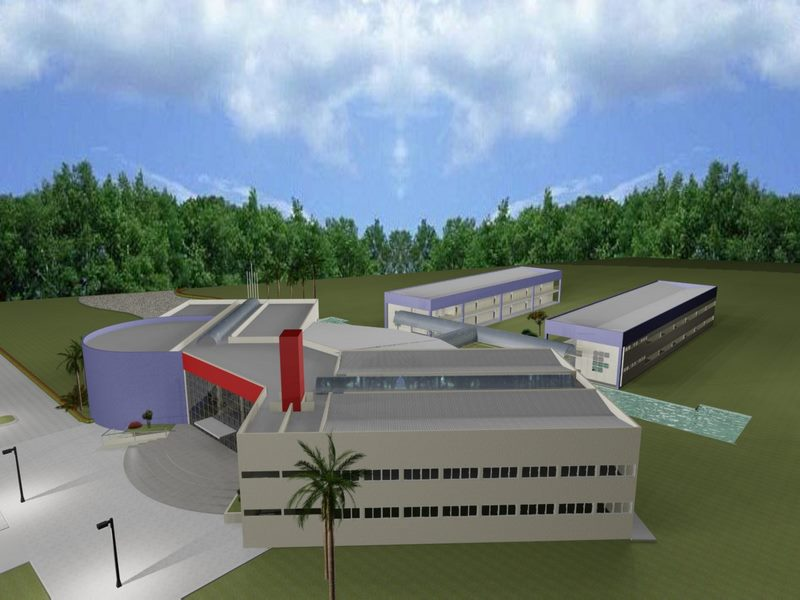

O Instituto Federal em Vilhena está localizado a cerca de cinco quilômetros do centro da cidade, demonstrando uma característica de campus mais urbano e voltado para a oferta de cursos industriais ou de docência em áreas técnicas
O Campus Vilhena entrou em funcionamento no segundo semestre de 2010, oferecendo os Cursos Técnicos Subsequentes em Edificações, Eletromecânica e Informática. A partir de 2011, os mesmos cursos também foram ofertados de forma integrada ao Ensino Médio .
O Processo Seletivo para ingresso é realizado semestralmente, as inscrições para a seleção são publicadas em edital, do qual constam os cursos com as respectivas vagas, prazos e documentação exigida para a inscrição, instrumentos, critérios de seleção e demais informações úteis. O processo seletivo é centrado em conteúdos do Ensino Fundamental para aqueles que desejam ingressar nos cursos Técnicos Integrados, e no conteúdo do Ensino Médio para os que desejam ingressar nos cursos Subsequentes ou Superiores.